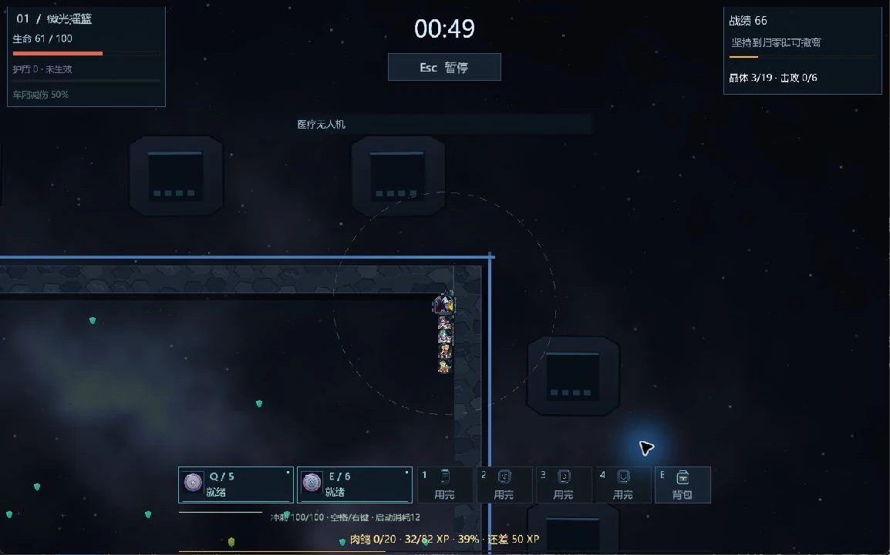
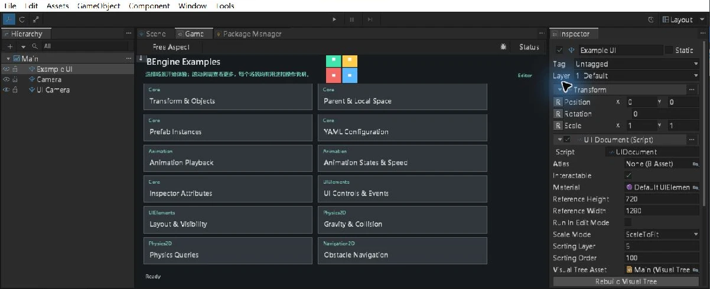

在实际作品中，
找到创作的起点。
从一个可导入场景，到一个完整游戏。先运行，再拆解，把工具用到你的想法里。
从小处开始
让第一个 Sprite 动起来。
Core Getting Started 是编辑器自带的入门示例。通过移动 Sprite 和切换颜色，认识场景、组件与生命周期。
跟随基础入门
使用 BEngine 制作
星际列车，驶向未知星云。
下载后，从 Hub 打开包含 Project.yaml 的工程文件夹。请使用与工程配置匹配的引擎和包版本。